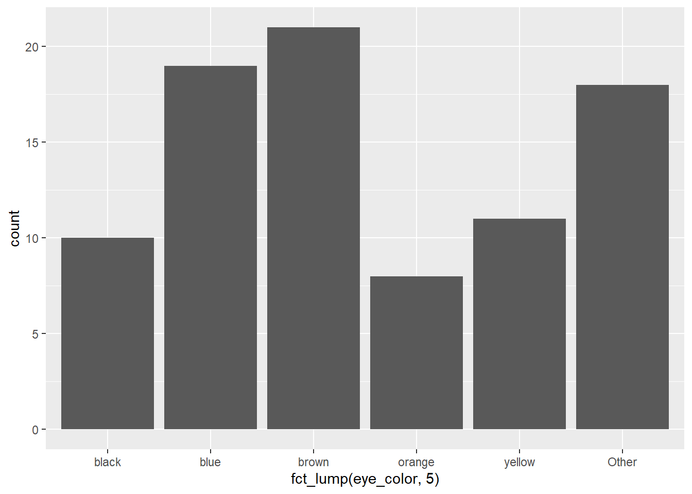
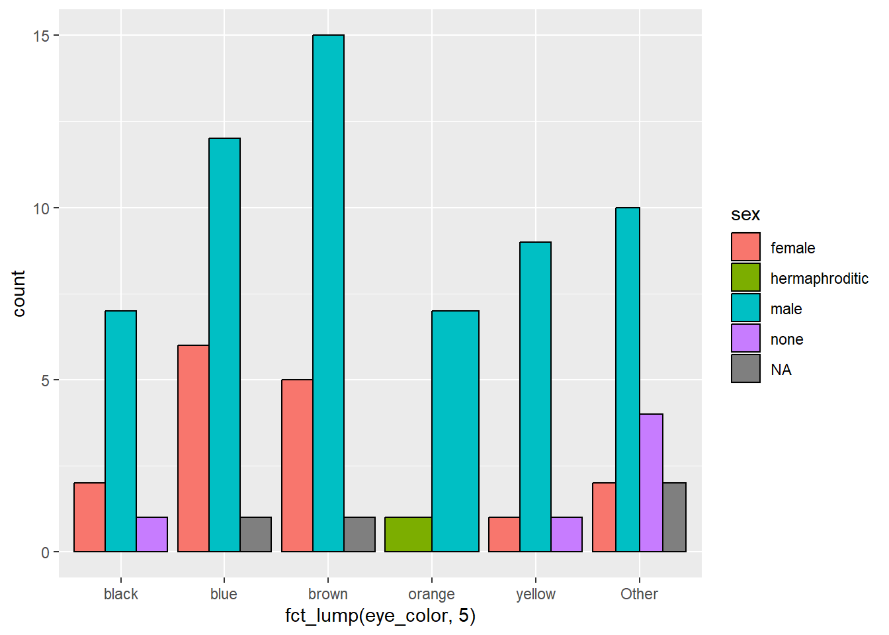
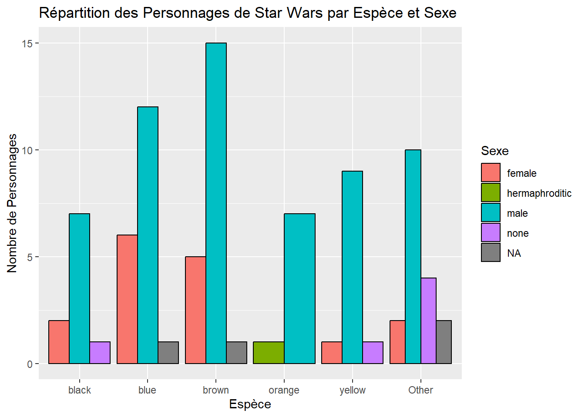
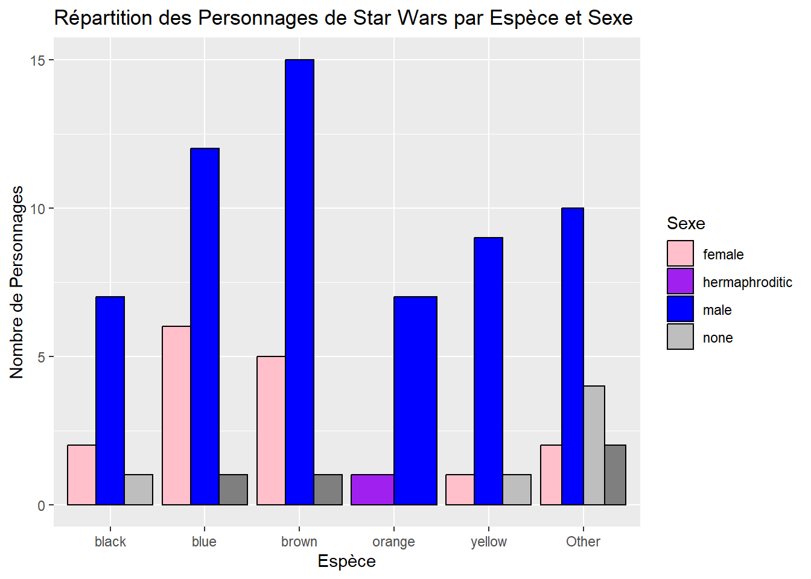
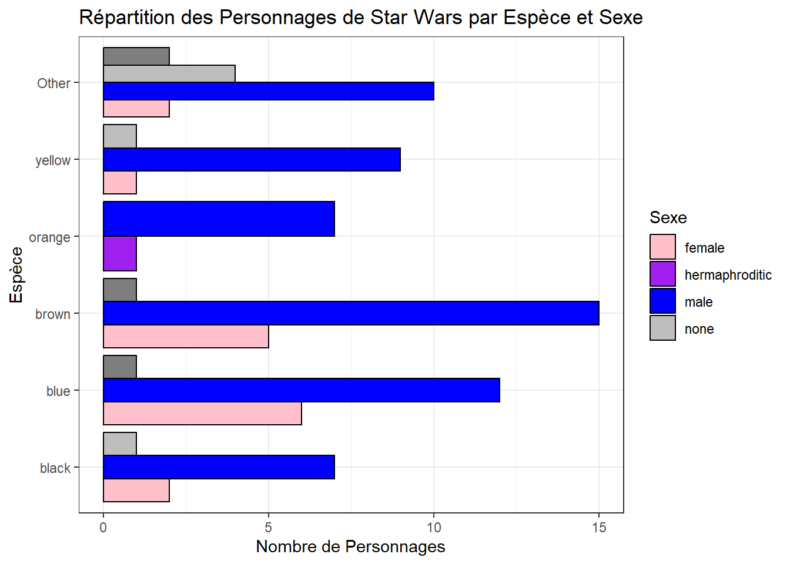

# A tibble: 87 x 2
name height
<chr> <int>
1 Luke Skywalker 172
2 C-3PO 167
3 R2-D2 96
4 Darth Vader 202
5 Leia Organa 150
6 Owen Lars 178
7 Beru Whitesun lars 165
8 R5-D4 97
9 Biggs Darklighter 183
10 Obi-Wan Kenobi 182
# i 77 more rowsTidyverse solutions
dplyr
Série 1
Exercice 1a : Sélectionnez les colonnes “name” et “height” de starwars. (Astuce: tidyselect)
Exercice 1b: Sélectionnez les colonnes qui contiennent le terme “color”. (Astuce: tidyselect)
# A tibble: 87 x 3
hair_color skin_color eye_color
<chr> <chr> <chr>
1 blond fair blue
2 <NA> gold yellow
3 <NA> white, blue red
4 none white yellow
5 brown light brown
6 brown, grey light blue
7 brown light blue
8 <NA> white, red red
9 black light brown
10 auburn, white fair blue-gray
# i 77 more rowsExercice 1c: Sélectionnez les colonnes numériques (astuce: where() et is.numeric()). (Astuce: tidyselect)
# A tibble: 87 x 3
height mass birth_year
<int> <dbl> <dbl>
1 172 77 19
2 167 75 112
3 96 32 33
4 202 136 41.9
5 150 49 19
6 178 120 52
7 165 75 47
8 97 32 NA
9 183 84 24
10 182 77 57
# i 77 more rowsExercice 1d: Sélectionnez la colonne “mass” et renommez-là “weight”. (Astuce: tidyselect)
# A tibble: 87 x 1
weigth
<dbl>
1 77
2 75
3 32
4 136
5 49
6 120
7 75
8 32
9 84
10 77
# i 77 more rowsExercice 2 : Filtrer les personnages dont l’espèce (species) est “Human”. (Astuce: tidyselect)
# A tibble: 35 x 14
name height mass hair_color skin_color eye_color birth_year sex gender
<chr> <int> <dbl> <chr> <chr> <chr> <dbl> <chr> <chr>
1 Luke Sk~ 172 77 blond fair blue 19 male mascu~
2 Darth V~ 202 136 none white yellow 41.9 male mascu~
3 Leia Or~ 150 49 brown light brown 19 fema~ femin~
4 Owen La~ 178 120 brown, gr~ light blue 52 male mascu~
5 Beru Wh~ 165 75 brown light blue 47 fema~ femin~
6 Biggs D~ 183 84 black light brown 24 male mascu~
7 Obi-Wan~ 182 77 auburn, w~ fair blue-gray 57 male mascu~
8 Anakin ~ 188 84 blond fair blue 41.9 male mascu~
9 Wilhuff~ 180 NA auburn, g~ fair blue 64 male mascu~
10 Han Solo 180 80 brown fair brown 29 male mascu~
# i 25 more rows
# i 5 more variables: homeworld <chr>, species <chr>, films <list>,
# vehicles <list>, starships <list>Exercice 3 : Triez les personnages par leur taille (height) de la plus grande à la plus petite. Astuce: desc()
# A tibble: 87 x 14
name height mass hair_color skin_color eye_color birth_year sex gender
<chr> <int> <dbl> <chr> <chr> <chr> <dbl> <chr> <chr>
1 Yarael ~ 264 NA none white yellow NA male mascu~
2 Tarfful 234 136 brown brown blue NA male mascu~
3 Lama Su 229 88 none grey black NA male mascu~
4 Chewbac~ 228 112 brown unknown blue 200 male mascu~
5 Roos Ta~ 224 82 none grey orange NA male mascu~
6 Grievous 216 159 none brown, wh~ green, y~ NA male mascu~
7 Taun We 213 NA none grey black NA fema~ femin~
8 Rugor N~ 206 NA none green orange NA male mascu~
9 Tion Me~ 206 80 none grey black NA male mascu~
10 Darth V~ 202 136 none white yellow 41.9 male mascu~
# i 77 more rows
# i 5 more variables: homeworld <chr>, species <chr>, films <list>,
# vehicles <list>, starships <list>Exercice 4 : Créez une nouvelle colonne “bmi” (indice de masse corporelle) en utilisant les colonnes “weight” et “height”. Astuce:
\[ \frac{mass}{(height/100)^2} \]
# A tibble: 87 x 15
name height mass hair_color skin_color eye_color birth_year sex gender
<chr> <int> <dbl> <chr> <chr> <chr> <dbl> <chr> <chr>
1 Luke Sk~ 172 77 blond fair blue 19 male mascu~
2 C-3PO 167 75 <NA> gold yellow 112 none mascu~
3 R2-D2 96 32 <NA> white, bl~ red 33 none mascu~
4 Darth V~ 202 136 none white yellow 41.9 male mascu~
5 Leia Or~ 150 49 brown light brown 19 fema~ femin~
6 Owen La~ 178 120 brown, gr~ light blue 52 male mascu~
7 Beru Wh~ 165 75 brown light blue 47 fema~ femin~
8 R5-D4 97 32 <NA> white, red red NA none mascu~
9 Biggs D~ 183 84 black light brown 24 male mascu~
10 Obi-Wan~ 182 77 auburn, w~ fair blue-gray 57 male mascu~
# i 77 more rows
# i 6 more variables: homeworld <chr>, species <chr>, films <list>,
# vehicles <list>, starships <list>, bmi <dbl>Exercice 5a : Groupez les personnages par leur planète d’origine (homeworld) et calculez le nombre de personnages dans chaque groupe.
# A tibble: 49 x 2
homeworld n
<chr> <int>
1 Alderaan 3
2 Aleen Minor 1
3 Bespin 1
4 Bestine IV 1
5 Cato Neimoidia 1
6 Cerea 1
7 Champala 1
8 Chandrila 1
9 Concord Dawn 1
10 Corellia 2
# i 39 more rowsExercice 5b : En vous basant sur l’exercice précédent, explorer la fonction count(). Plus précisément réalisez les actions suivantes:
Arranger les valeurs dans l’ordre décroissant
Nommer la colonne de compte (“n”) par le nom “count”
Renommer
Astuce: utiliser ?count pour savoir comment fonctionne la fonction ou allez voir la documentation en ligne.
# A tibble: 49 x 2
homeworld n
<chr> <int>
1 Alderaan 3
2 Aleen Minor 1
3 Bespin 1
4 Bestine IV 1
5 Cato Neimoidia 1
6 Cerea 1
7 Champala 1
8 Chandrila 1
9 Concord Dawn 1
10 Corellia 2
# i 39 more rowsSérie 2
Exercice 6 : Sélectionnez les 5 premiers personnages dont l’âge (birth_year) est supérieur à 30 ans .
# A tibble: 5 x 14
name height mass hair_color skin_color eye_color birth_year sex gender
<chr> <int> <dbl> <chr> <chr> <chr> <dbl> <chr> <chr>
1 C-3PO 167 75 <NA> gold yellow 112 none mascu~
2 R2-D2 96 32 <NA> white, bl~ red 33 none mascu~
3 Darth Va~ 202 136 none white yellow 41.9 male mascu~
4 Owen Lars 178 120 brown, gr~ light blue 52 male mascu~
5 Beru Whi~ 165 75 brown light blue 47 fema~ femin~
# i 5 more variables: homeworld <chr>, species <chr>, films <list>,
# vehicles <list>, starships <list>Exercice 7 : Créez une colonne “homeworld_length” qui contient la longueur (nombre de caractères) du nom de la planète d’origine (homeworld). Astuce: str_count() ou nchar()
# A tibble: 87 x 15
name height mass hair_color skin_color eye_color birth_year sex gender
<chr> <int> <dbl> <chr> <chr> <chr> <dbl> <chr> <chr>
1 Luke Sk~ 172 77 blond fair blue 19 male mascu~
2 C-3PO 167 75 <NA> gold yellow 112 none mascu~
3 R2-D2 96 32 <NA> white, bl~ red 33 none mascu~
4 Darth V~ 202 136 none white yellow 41.9 male mascu~
5 Leia Or~ 150 49 brown light brown 19 fema~ femin~
6 Owen La~ 178 120 brown, gr~ light blue 52 male mascu~
7 Beru Wh~ 165 75 brown light blue 47 fema~ femin~
8 R5-D4 97 32 <NA> white, red red NA none mascu~
9 Biggs D~ 183 84 black light brown 24 male mascu~
10 Obi-Wan~ 182 77 auburn, w~ fair blue-gray 57 male mascu~
# i 77 more rows
# i 6 more variables: homeworld <chr>, species <chr>, films <list>,
# vehicles <list>, starships <list>, homeworld_length <int>Exercice 8 : Filtrez les personnages dont le nom de leur planète d’origine (homeworld) contient la lettre “o”.
# A tibble: 51 x 14
name height mass hair_color skin_color eye_color birth_year sex gender
<chr> <int> <dbl> <chr> <chr> <chr> <dbl> <chr> <chr>
1 Luke Sk~ 172 77 blond fair blue 19 male mascu~
2 C-3PO 167 75 <NA> gold yellow 112 none mascu~
3 R2-D2 96 32 <NA> white, bl~ red 33 none mascu~
4 Darth V~ 202 136 none white yellow 41.9 male mascu~
5 Owen La~ 178 120 brown, gr~ light blue 52 male mascu~
6 Beru Wh~ 165 75 brown light blue 47 fema~ femin~
7 R5-D4 97 32 <NA> white, red red NA none mascu~
8 Biggs D~ 183 84 black light brown 24 male mascu~
9 Obi-Wan~ 182 77 auburn, w~ fair blue-gray 57 male mascu~
10 Anakin ~ 188 84 blond fair blue 41.9 male mascu~
# i 41 more rows
# i 5 more variables: homeworld <chr>, species <chr>, films <list>,
# vehicles <list>, starships <list>Exercice 9 : Calculez la taille moyenne (height) des personnages pour chaque espèce (species) et triez les résultats par taille moyenne décroissante.
# A tibble: 38 x 2
species mean_height
<chr> <dbl>
1 Quermian 264
2 Wookiee 231
3 Kaminoan 221
4 Kaleesh 216
5 Gungan 209.
6 Pau'an 206
7 Besalisk 198
8 Cerean 198
9 Chagrian 196
10 Nautolan 196
# i 28 more rowsExercice 10 : Groupez les personnages par leur espèce (species) et calculez la taille moyenne (height) ainsi que la masse moyenne (mass) pour chaque espèce.
# A tibble: 38 x 3
species mean_height mean_mass
<chr> <dbl> <dbl>
1 Aleena 79 15
2 Besalisk 198 102
3 Cerean 198 82
4 Chagrian 196 NaN
5 Clawdite 168 55
6 Droid 131. 69.8
7 Dug 112 40
8 Ewok 88 20
9 Geonosian 183 80
10 Gungan 209. 74
# i 28 more rowsggplot2
Exercice 1: Introduction à ggplot2
Créez un graphique de base avec
ggplotmontrant la répartition des personnages de StarWars par couleur de yeux.Pour des raisons de lisibilité utilisez la fonction fct_lump(n = 5) pour garder les 5 valeurs les plus importantes

Exercice 2: Travailler avec aes
Modifiez le graphique précédent pour colorer les barres en fonction du sexe des personnages.

Exercice 3: Explorer geom_bar
Créez un graphique montrant le nombre de personnages par espèce, mais cette fois, utilisez geom_bar avec l’argument position = "dodge".
- Si vous le souhiatez, vous pouvez ajouter dans geom_bar l’argument color = “black” pour ajouter des contours aux bars

Exercice 4: Personnalisation avec theme et labs
Ajoutez des labels à votre graphique. Ajoutez:
Un titre et un sous-titre
Des labels
Changer le nom de la légende “sex” par “Sexe” (astuce: argument fill)

Exercice 5: Utiliser scale_*
Modifiez les couleurs de votre graphique en utilisant scale_fill_manual pour assigner manuellement des couleurs.
- Pour la documentation: ?scale_fill_manual ou sur le site

Exercice 6: Pivoter le graphique pour rendre le texte lisible (Astuce: coord_flip())
Exercice 7: Choisissez le thème qui vous plaît dans la liste à disposition pour votre graphe

Exercice 8: Explorer les options suivantes: